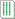
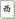

ダブル立直 （リーチ）
＃門前
誰からの鳴きも入らないで自分の第１打で立直した場合に成立する

意識しないと作れない役が多い。鳴くと役が下がるものもあるので注意。しっかり覚えよう。
＃門前
誰からの鳴きも入らないで自分の第１打で立直した場合に成立する
萬子・索子・筒子それぞれの色で同じ数字の刻子・槓子があった場合に成立する。

槓子を３つ作って和了した場合に成立する
刻子・槓子を４つ作って和了した場合に成立する
暗刻（鳴かずに作った刻子）を３つ作って和了した場合に成立する。
白・發・中のいずれかを雀頭とし、のこり２つを刻子・槓子にして和了した場合に成立する
么九牌（一九牌と字牌）だけで和了した場合に成立する
#門前
違う対子を７組揃えた場合に成立する。
#食い下がり一飜
４面子１雀頭の全てに么九牌（一九牌と字牌）が関わっていた場合に成立する
#食い下がり一飜
同種の数牌で123・456・789の順子があった場合に成立する
#食い下がり一飜
萬子・索子・筒子それぞれの色で同じ並びの順子があった場合に成立する
